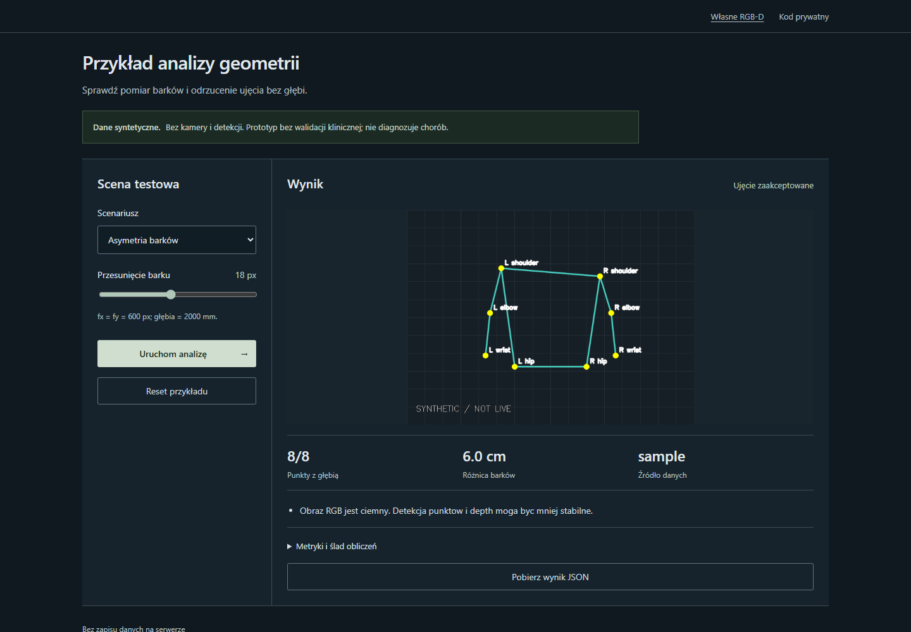

Posture Analysis System
Body geometry from RGB images and stereo depth.
An OAK-D/MediaPipe pipeline combines body landmarks with depth. A separate Flask application processes uploaded RGB-D, stores history and exports PDF/JSON.

Implementation
- Camera calibration converts pixels and depth into XYZ. Median samples and quality checks identify missing or unreliable input.
- The camera path uses MediaPipe. The web app accepts exported landmarks or four manually marked points.
- SQLite stores private captures, results and reports. The backend checks file ownership and data/concurrency limits.
Verification
Controlled RGB-D gives a 6 cm shoulder-height difference. Tests cover geometry, rejection, sessions, saved history and PDF export. An archived camera capture is also available below.
Archived OAK-D capture · 6 Apr 2026


Images and results come from one run of an archived version and were not recalculated. Landmarks on clothing do not establish anatomical accuracy.
Limitations
A prototype without clinical validation. It requires aligned depth in mm and calibration matching RGB. The new OAK-D path has not completed human-measurement verification; MediaPipe does not directly locate C7, shoulder blades or PSIS. Guest session: 3 captures / 20 MiB, up to 24 hours.